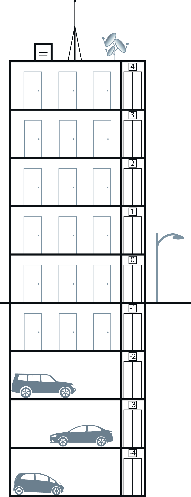

|
Chapitre 3
|
- Opérations sur les relatifs
|
Activité Introduction

Dans un immeuble les nombres relatifs sont souvent utilisés pour désigner les étages.
On utilise alors les nombres négatifs pour indiquer les étages en sous-sol.
- Depuis le rez-de-chaussée (étage 0) de combien d’étages dois-je monter pour arriver au :
- 1er étage ?
- 4ème étage ?
- 2ème parking ?
- Depuis le 2ème étage de combien d’étages dois-je descendre pour arriver au :
- sous sol des caves ?
- 3ème étage ?
- A l'aide des questions précédentes, compléter les calculs suivants :
- $0+\qquad=1$
- $0+\qquad=4$
- $0+\qquad=-2$
- $2-\qquad=-1$
- $2-\qquad=3$
Rappels sur les sommes de deux nombres relatifs :
La distance à zéro d'un nombre relatif correspond à la distance sur axe graduée entre ce nombre et l'origine.
On parle aussi de valeur absolue.
L'opposé d'un nombre relatif est le nombre de signe contraire et de même valeur absolue.
Somme de deux nombres relatifs :
La somme de deux nombres relatifs de même signe
a le même signe que
ses deux nombres. On ajoute alors les valeurs absolues.
Exemples :
➤ $(+4)+(+7) = +(4+7)=+11$
➤ $(-3)+(-4) = -(3+4)=-7$
La somme de deux nombres relatifs de signes contraires
a le signe du nombre relatif qui a la plus grande valeur absolue.
On effectue la différence des valeurs absolues.
Exemples :
➤ $(+4)+(-7) = -(7-4)=-3$
➤ $(-9)+(+15) = +(15-9)=+6$
Différence de deux nombres relatifs :
Pour soustraire un nombre relatif, on ajoute son opposé.
Exemples :
➤ $(+15)-(+9) = (+15)+(-9)=+(15-9)=6$
➤ $(+20)-(-11)=(+20)+(+11)=+(20+11)=31$
➤ $(-6)-(+7)=(-6)+(-7)=-(6+7)=-13$
➤ $(-12)-(-3)=(-12)+(+3)=-(12-3)=-9$
Simplification d'une suite de sommes :
Propriété :
Dans une somme ou une différence, on peut supprimer un couple de parenthèses
et le signe qui le précède à condition :
-
de ne rien changer lorsque le signe qui
précède les parenthèses est « $+$ ».
-
de prendre l'opposé de tous les nombres situés
à l'intérieur de ces parenthèses lorsque le signe qui les précède est
« $-$ ».
Exemples :
$+(+3)+(-5)-(+6)-(-7)$
On supprime les parenthèses précédées d'un signe $+$
$\textcolor{red}{+(}+3\textcolor{red}{)+(}-5\textcolor{red}{)}-(+6)-(-7)$
$+3-5-(+6)-(-7)$
On supprime les parenthèses précédées d'un signe $-$ en prenant l'opposé des nombres dans la parenthèse
$+3-5\textcolor{red}{-(}+6\textcolor{red}{)-(}-7\textcolor{red}{)}$
$+3-5\textcolor{green}{-}6\textcolor{green}{+}7$
Autre exemple avec plusieurs termes
$-5\textcolor{red}{+(}-2+3-4\textcolor{red}{)}=-5-2+3-4$
$12\textcolor{red}{-(}3-5+2\textcolor{red}{)}=12
\textcolor{green}{-}3\textcolor{green}{+}5\textcolor{green}{-}2$
Produit de nombres relatifs :
|
|
$2 \times 4 = 8$
|
|
$1 \times 4 = 4$
|
|
$0 \times 4 = 0$
|
|
$-1 \times 4 = -4$
|
|
$-2 \times 4 = -8$
|
|
|
|
|
$2 \times (-4) = -8$
|
|
$1 \times (-4) = -4$
|
|
$0 \times (-4) = 0$
|
|
$-1 \times (-4) = 4$
|
|
$-2 \times (-4) = 8$
|
|
|
Produit de deux nombres relatifs :
Pour calculer le produit de deux nombres relatifs, on multiplie les valeurs absolues et :
-
Si les deux nombres sont de même signe
, le produit est positif.
-
Si les deux nombres sont de signes contraires,
le produit est négatif.
Exemples :
➤ $(+9)\times(+7) = +(9\times7)=63$
➤ $(-6)\times(-4) = +(6\times4)=24$
➤ $(-8)\times(+5) = -(8\times5)=-40$
➤ $(+3)\times(-6) = -(3\times6)=-18$
Signe d'un produit de plusieurs facteurs :
Lorsqu'on multiplie plusieurs nombres relatifs, on multiplie les valeurs absolues des facteurs.
-
Le produit est positif si le nombre de facteurs négatifs est pair.
-
Le produit est négatif si le nombre de facteurs négatifs est impair.
Exemples :
➤ $-6\times(-2)\times5 = 6\times2\times5=60$
➤ $-3\times4\times(-25)\times(-2)=-(3\times4\times25\times2)=-600$
➤ $-7\times(-2)\times(-5)\times(-8)=7\times2\times5\times8=560$
Quotient de nombres relatifs :
Exemples :
➤ $5\times7 = 35$ donc $35\div7=5$
ou $35\div5=7$
➤ $-6\times7=-42$ donc $(-42)\div7=-6$
ou $(-42)\div(-6)=7$
➤ $-5\times(-8)=40$ donc $40\div(-5)=-8$
ou $40\div(-8)=-5$
Le quotient de deux nombres relatifs a le même signe que leur produit.
La valeur absolue du quotient est égale au quotient des valeurs absolues.